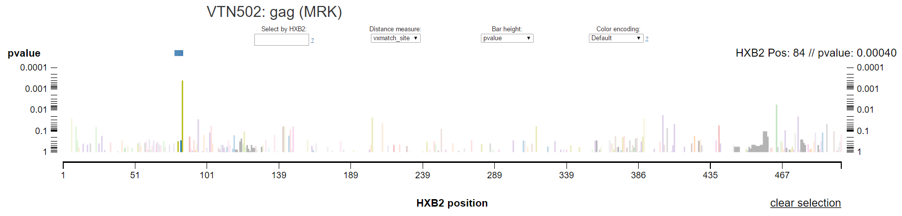
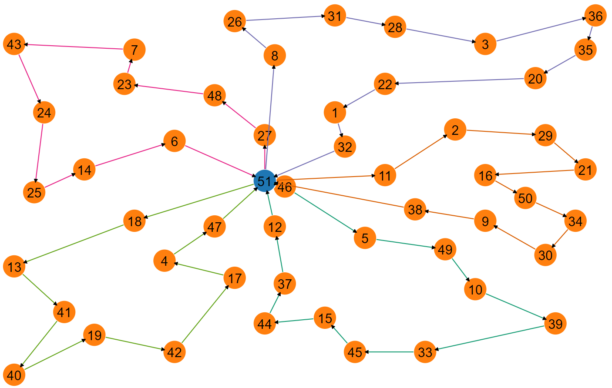
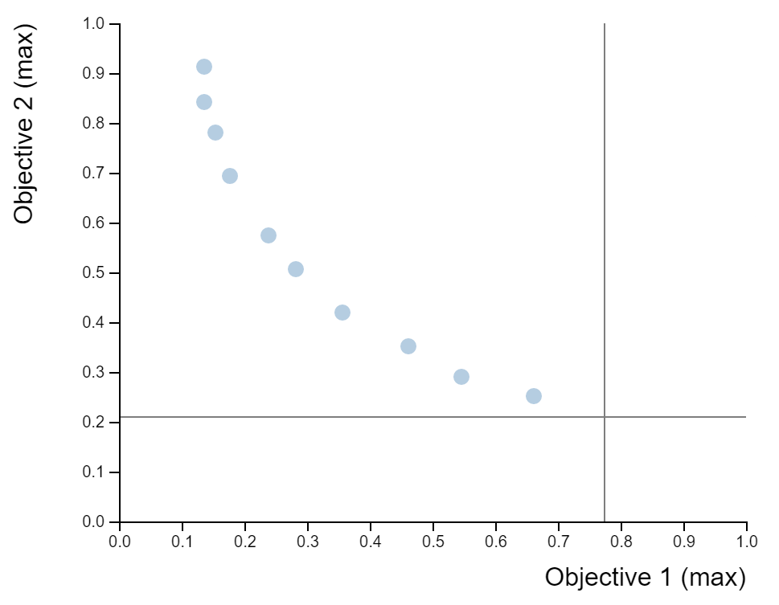

Endeavors outside my primary research, mostly visualization tools
Jump to:NEWS SieveSifter was recently published in the Journal of Bioinformatics. Access the article here.
SieveSifter (formerly "SIEVE" for the Statistical Interactive Explorer of Vaccine Efficacy) is an interactive visualization for exploring breakthrough sequence data from vaccine efficacy trials. Specifically, SieveSifter aids the process of "sieve analysis", which compares the genetic sequences of viruses isolated from infected vaccine versus placebo recipients. The visualization allows researchers to study the effect of the vaccine at the level of amino acids in the breakthrough viruses and find statistically significant differences in the groups.
We recently added datasets to SieveSifter, making it a unique source for consolidated sieve analysis studies in addition to an analysis tool.
The Vehicle Routing Problem REPository (VRP-REP) is a place where researchers in vehicle routing can share information like instances and solutions using a common format. Mapper is a simple mapping utility for such instances and solutions.
When coworkers decide to bring desserts for one another's birthdays, how do they decide who brings dessert when and for whom? The Birthday Fairy Scheduling Assistant is a simple optimization tool to equitably answer this question.
| DessertChef | PreparesFor | OnDate |
|---|---|---|
| Steven Tyler | George Dantzig | 11-2-16 |
| George Washington Carver | Langston Hughes | 1-18-17 |
| Langston Hughes | Jane Goodall | 4-5-17 |
The Conflict and Correlation Sandbox lets users interact with a two-dimensional scatterplot and see how various metrics for conflict and correlation respond.
It was originally developed as an accessory to MOOViz to help determine how to measure conflict between pairs of objectives in multi-objective optimization.
More projects can be found on my GitHub page, such as